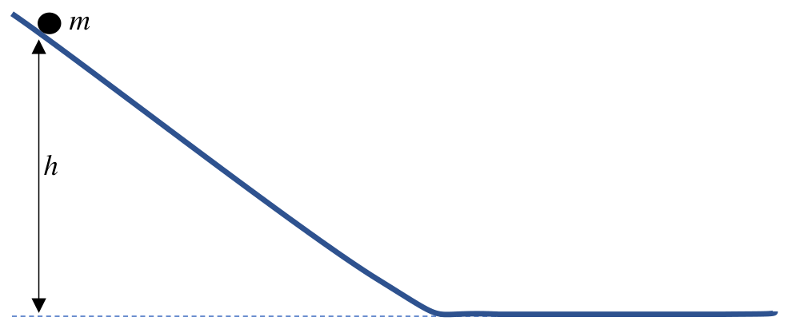
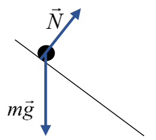
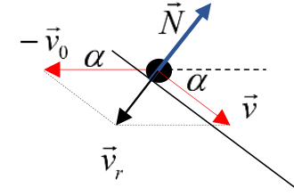
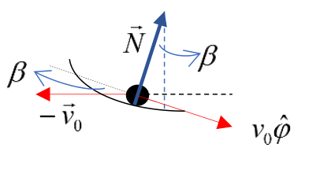
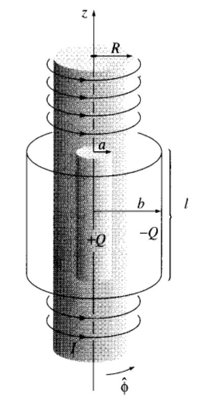

원문: Romanian Master of Physics 2017, Theoretical problem 1: Two paradoxes (문제와 해설). 배점은 원문의 p를 pt로 표기하였다. 회색 상자가 풀이이며, 각 식 오른쪽의 괄호 안 숫자는 그 단계의 배점이다.
역설(paradox)이란 겉보기에 거짓인 진술, 또는 서로 다른 두 가지 방식으로 분석했을 때 모순되는 본성을 드러내는 진술이다.
질량 $m$인 물체(질점으로 다룬다)가 전체 길이에 걸쳐 경사가 일정한 비탈(그림 1) 위에 정지 상태로 놓여 있다. 물체를 놓으면 비탈 아래쪽으로 미끄러지기 시작하여 수평면 위에서 계속 오른쪽으로 움직인다. 비탈과 수평면의 연결 부분은 매끄러워서, 물체의 속력은 변하지 않고 속도의 방향만 바뀐다. 출발점은 수평면에서 높이 $h$에 있으며, 중력 가속도의 값은 일정하고 알려져 있다($g$). 마찰은 모든 곳에서 무시한다.

| A1 | 수평면 위에서 물체의 속력 $v_0$에 대한 수학적 표현을 유도하라. | 0.30 pt |
풀이:
마찰이 없으므로 역학적 에너지는 보존된다. 중력 퍼텐셜 에너지의 기준을 수평면으로 잡으면, 출발점에서 물체는 퍼텐셜 에너지 $mgh$만을 갖고, 수평면 위에서는 운동 에너지 $\dfrac{mv_0^2}{2}$만을 갖는다. 따라서
이로부터
\[v_0 = \sqrt{2gh}\,.\tag*{(0.10 pt)}\]이제 같은 과정을, 지면(비탈과 수평면)에 대해 일정한 속력 $v_0$으로 오른쪽으로 움직이는 기준계에서 본다고 하자. 이 기준계에서 물체의 나중 에너지는 0이고, 처음 에너지는 양수이다.
| A2 | 에너지는 어디로 “사라졌는가”? 사라진 에너지에 대해 자세한 정량적 분석을 제시하라. | 3.70 pt |
풀이:
그림 1R(a)의 자유 물체 도형(free body diagram)을 고려하면,

운동 에너지 변화에 관한 정리(일-에너지 정리)는 다음과 같다.
\[\Delta E_c = L_{mg}+L_N\,.\tag*{(0.50 pt)}\]물체의 처음 속력은 $v_0$이고 나중 속력은 0이므로, 운동 에너지의 변화는
\[\Delta E_c = 0-\frac{mv_0^2}{2} = -\frac{mv_0^2}{2} = -mgh\,,\tag*{(0.20 pt)}\]이고, 물체의 무게가 한 일은 다음과 같다.
\[L_{mg} = mgh\,.\tag*{(0.10 pt)}\]
$\vec v_r$는 $\vec N$에 수직이 아니므로 [그림 1R(b)], 수평면과 각 $\alpha$를 이루는 비탈의 내리막 부분에서
\[N = mg\cos\alpha\tag*{(0.10 pt)}\]가 한 일은
\[dL_{1N} = \vec N\cdot\vec v_rdt = -Nv_0dt\sin\alpha = -mgv_0dt\sin\alpha\cos\alpha\,,\tag*{(0.40 pt)}\]또는
\[L_{1N} = -mgv_0\tau_1\sin\alpha\cos\alpha\,,\tag*{(0.20 pt)}\]이다. 여기서 $\tau_1$은 내려오는 데 걸리는 시간으로, 물체의 운동 방정식을 연직축에 사영하여 구한다.
\[ma_y = mg-N\cos\alpha = mg-mg\cos^2\alpha = mg\sin^2\alpha\,.\tag*{(0.30 pt)}\]따라서
\[a_y = g\sin^2\alpha\,,\tag*{(0.10 pt)}\]그러므로
\[\tau_1 = \sqrt{\frac{2h}{a_y}} = \frac{1}{\sin\alpha}\sqrt{\frac{2h}{g}}\,.\tag*{(0.10 pt)}\]결과적으로
\[L_{1N} = -mgv_0\sqrt{\frac{2h}{g}}\cos\alpha = -mg\sqrt{2gh}\sqrt{\frac{2h}{g}}\cos\alpha = -2mgh\cos\alpha\,.\tag*{(0.10 pt)}\]
비탈과 수평면의 연결 부분에서 물체의 속력은 $v_0$으로, 크기는 일정하지만 방향은 일정하지 않다. 그 결과 [그림 1R(c)], 궤적의 이 부분에서 $\vec N$이 한 일은 다음과 같다.
\[dL_{2N} = \vec N\cdot\vec v_rdt = -Nv_0dt\sin\beta\,.\tag*{(0.30 pt)}\]운동량 변화에 관한 정리의 수학적 표현을 수평축에 사영하면
\[dp_x = N_xdt = Ndt\sin\beta\,.\tag*{(0.30 pt)}\]따라서
\[dL_{2N} = -v_0dp_x\,.\tag*{(0.10 pt)}\]연결 부분 전체에 대해서는
\[L_{2N} = -v_0\Delta p_x = -v_0m\left(v_0-v_0\cos\alpha\right) = -mv_0^2\left(1-\cos\alpha\right) = -2mgh\left(1-\cos\alpha\right).\tag*{(0.50 pt)}\]결론적으로
\[L_N = L_{1N}+L_{2N} = -2mgh\,,\tag*{(0.20 pt)}\]이므로, 운동 에너지 변화에 관한 정리는 움직이는 관성계에서도 성립한다. (0.20 pt)
전자기파가 단위 시간당 단위 넓이를 통해 전달하는 에너지를 포인팅 벡터(Poynting vector)라 하며, 그 수학적 형태는 다음과 같다.
\[\vec S = \frac{1}{\mu_0}\vec E\times\vec B\,,\]여기서 $\mu_0$은 진공의 투자율(magnetic permeability)이다. 진공의 유전율(electric permittivity) $\varepsilon_0$도 알려져 있다.
| B1 | 전자기파의 선운동량의 부피 밀도 $p_V$를 유도하라. 결과를 벡터 형태($\vec p_V$)로 나타내라. | 0.90 pt |
풀이:
전자기파는 광자들로 이루어진 것으로 볼 수 있으므로, 그 운동량은
이며, 여기서 $c$는 진공에서의 빛의 속력이다. 이 조건에서 선운동량의 부피 밀도는
\[p_V = \frac{\delta p}{\delta V} = \frac{S\delta A\delta t}{c\delta A\delta l} = \frac{S}{c\dfrac{\delta l}{\delta t}} = \frac{S}{c^2}\,.\tag*{(0.40 pt)}\]벡터 형태로는
\[\vec p_V = \frac{1}{c^2\mu_0}\vec E\times\vec B = \varepsilon_0\vec E\times\vec B\,.\tag*{(0.20 pt)}\]
그림 2에는 길이 $l$인 길고 동축인 원통 껍질 두 개가 있다. 안쪽 껍질은 반지름이 $a$이고 전하 $+Q$가 표면에 고르게 분포해 있다. 바깥쪽 원통은 반지름이 $b\ (b \ll l)$이고 전하 $-Q$가 표면에 고르게 분포해 있다. 두 원통은 같은 재료로 만들어졌으며, 단위 넓이당 질량은 $\sigma$이다. 이들과 동축으로, 반지름 $R\ (a < R < b)$이고 단위 길이당 감은 수가 $n$이며 전류 $i$가 흐르는 긴 솔레노이드(solenoid)가 있다. 솔레노이드는 고정되어 있지만, 원통 껍질들은 공통 축을 중심으로 자유롭고 독립적으로 회전할 수 있다. 처음에 이 계의 모든 부분은 정지해 있다.
| B2.1 | 솔레노이드의 전류를 서서히 0으로 줄이면 원통들이 회전하기 시작한다. 원통들의 나중 각속도(크기와 방향)에 대한 수학적 표현을 유도하라. | 2.60 pt |
참고: 원통 껍질들은 충분히 무거워서, 그들의 회전으로 인한 자기장은 무시할 수 있다!
풀이:
솔레노이드에 흐르는 전류는 그 안쪽에 다음과 같은 자기장을 만든다.
전류가 줄어들면 자기장의 세기가 줄어들고, 패러데이 법칙(Faraday’s law)에 따라 (원형 전기력선을 갖는) 전기장이 유도된다.
\[\vec E\cdot2\pi r\hat\phi = -\frac{d}{dt}\left(\vec B\cdot\vec S\right).\tag*{(0.30 pt)}\]$r < R$이면 $\vec S = \pi r^2\hat z$이고 (0.10 pt)
\[\vec E = -\frac12\mu_0n\frac{di}{dt}r\hat\phi\,,\tag*{(0.10 pt)}\]$r > R$이면 $\vec S = \pi R^2\hat z$이고 (0.10 pt)
\[\vec E = -\frac12\mu_0n\frac{di}{dt}\frac{R^2}{r}\hat\phi\,.\tag*{(0.10 pt)}\]안쪽 원통에 작용하는 돌림힘(torque)은
\[\vec\tau_a = \vec r\times Q\vec E = -\frac12\mu_0nQa^2\frac{di}{dt}\hat r\times\hat\phi = -\frac12\mu_0nQa^2\frac{di}{dt}\hat z\,.\tag*{(0.40 pt)}\]각운동량 변화에 관한 정리에 따라
\[\vec\tau_a = \frac{d\vec L_a}{dt}\,,\tag*{(0.20 pt)}\]따라서
\[\Delta\vec L_a = -\frac12\mu_0nQa^2\Delta i\hat z\,,\tag*{(0.10 pt)}\]또는
\[\vec L_a = \frac12\mu_0nQa^2i\hat z\,.\tag*{(0.10 pt)}\]다음이 성립하므로
\[\vec L_a = I\vec\omega_a = m_aa^2\vec\omega_a = 2\pi l\sigma a^3\vec\omega_a\,,\tag*{(0.30 pt)}\]다음을 얻는다.
\[\boxed{\vec\omega_a = \frac{\mu_0nQi}{4\pi l\sigma a}\hat z}\,,\tag*{(0.10 pt)}\]바깥 원통에 작용하는 돌림힘은
\[\vec\tau_b = \vec r\times\left(-Q\right)\vec E = \frac12\mu_0nQR^2\frac{di}{dt}\hat r\times\hat\phi = \frac12\mu_0nQR^2\frac{di}{dt}\hat z\,.\tag*{(0.10 pt)}\]각운동량 변화에 관한 정리
\[\vec\tau_b = \frac{d\vec L_b}{dt}\,,\tag*{(0.10 pt)}\]를 이용하면 각운동량의 변화는
\[\Delta\vec L_b = \frac12\mu_0nQR^2\Delta i\hat z\,,\tag*{(0.10 pt)}\]또는
\[\vec L_b = -\frac12\mu_0nQR^2i\hat z\,.\tag*{(0.10 pt)}\]다음이 성립하므로
\[\vec L_b = I\vec\omega_b = m_bb^2\vec\omega_b = 2\pi l\sigma b^3\vec\omega_b\,,\tag*{(0.10 pt)}\]다음을 얻는다.
\[\boxed{\vec\omega_b = -\frac{\mu_0nQiR^2}{4\pi l\sigma b^3}\hat z}\,,\tag*{(0.10 pt)}\]이는 위에서 볼 때 바깥 원통이 시계 방향으로 회전함을 뜻한다.
| B2.2 | 계에 외력이 작용하지 않았으므로 계의 각운동량은 보존되어야 한다. 각운동량은 어디에서 “나타났는가”? 이 역설에 대해 자세한 정량적 분석을 제시하라. | 1.30 pt |
풀이:
원통 사이의 영역 $(a < r < b)$에는 가우스 정리(Gauss theorem)로 주어지는 전기장이 있다.
솔레노이드에 전류가 흐르는 동안에는 그 안쪽에 자기장이 있으므로, 장(field)의 선운동량 밀도는 다음과 같다.
\[\vec p_V = \varepsilon_0\vec E\times\vec B = \frac{Q}{2\pi l}\frac1r\hat r\times\mu_0ni\hat z = -\frac{\mu_0niQ}{2\pi l}\frac1r\hat\phi\,.\tag*{(0.20 pt)}\]장의 각운동량 밀도는
\[\vec l_{em} = \vec r\times\vec p_V = -\frac{\mu_0niQ}{2\pi l}\hat r\times\hat\phi = -\frac{\mu_0niQ}{2\pi l}\hat z\,.\tag*{(0.30 pt)}\]장의 전체 각운동량은
\[\vec L_{em} = \vec l_{em}\times\pi\left(R^2-a^2\right)l = -\frac12\mu_0niQ\left(R^2-a^2\right)\hat z\,.\tag*{(0.30 pt)}\](원문 표기 그대로 “×”로 적었으나, 스칼라 부피 $\pi\left(R^2-a^2\right)l$을 곱한다는 뜻이다.)
위의 결과들을 확인하면 곧바로
\[\vec L_{em} = \vec L_a+\vec L_b\,,\tag*{(0.20 pt)}\]즉 장의 각운동량이 원통들의 역학적 각운동량으로 완전히 바뀌었음을 알 수 있다.
| B2.3 | 솔레노이드의 전류를 줄이는 대신, 두 원통을 질량을 무시할 수 있는 반지름 방향 막대로 단단히 연결한다(실제로 어떻게 하는지는 여기서 관심 대상이 아니다). 막대는 변위 전류를 무시할 수 있도록 약한 도체이다. 이 경우 원통들의 전체 각운동량과 각속도를 구하라. | 1.20 pt |
풀이:
이 경우 전기장이 사라지며, 각운동량이 전환되는 메커니즘은 로런츠 힘(Lorentz force)에 바탕을 둔다. 따라서 막대의 한 토막
에 작용하는 힘은
\[d\vec F = i_1d\vec r\times\vec B = i_1Bdr\hat r\times\hat z = i_1Bdr\left(-\hat\phi\right) = -i_1Bdr\hat\phi\,,\tag*{(0.20 pt)}\]이며, 여기서
\[i_1 = \frac{dQ}{dt}\tag*{(0.10 pt)}\]는 원통들을 방전시키는 전류이고,
\[\vec B = \begin{cases}\mu_0ni\hat z\,, & \text{for } a < r < R\\ \vec 0\,, & \text{for } r > R\end{cases}\]는 솔레노이드가 만드는 자기장이다.
막대에 작용하는 돌림힘은
\[\vec\tau = \int_a^b\vec r\times d\vec F = -\mu_0nii_1\left(\int_a^Rrdr\right)\hat r\times\hat\phi = -\frac12\mu_0nii_1\left(R^2-a^2\right)\hat z\,.\tag*{(0.30 pt)}\]다음이 성립하므로
\[\vec\tau = \frac{d\vec L}{dt}\,,\tag*{(0.10 pt)}\]다음을 얻는다.
\[\frac{d\vec L}{dt} = -\frac12\mu_0ni\frac{dQ}{dt}\left(R^2-a^2\right)\hat z\,,\]또는
\[\Delta\vec L = -\frac12\mu_0ni\Delta Q\left(R^2-a^2\right)\hat z\,.\]여기서
\[\Delta\vec L = \vec L-\vec 0 = \vec L\ \text{그리고}\ \Delta Q = Q-0 = Q\,,\tag*{(0.10 pt)}\]이므로 다음이 따라 나온다.
\[\vec L = -\frac12\mu_0niQ\left(R^2-a^2\right)\hat z\,,\tag*{(0.10 pt)}\]이는 위에서 구한 장의 각운동량과 일치한다.
마지막으로, 원통들의 각속도는 다음과 같다.
\[\boxed{\vec\omega = \frac{\vec L}{I_{tot}} = -\frac{\mu_0niQ\left(R^2-a^2\right)}{4\pi\sigma l\left(a^3+b^3\right)}\hat z}\,.\tag*{(0.30 pt)}\]출제: Assoc. Prof. Sebastian POPESCU, PhD — Faculty of Physics, Alexandru Ioan Cuza University of Iași, ROMANIA